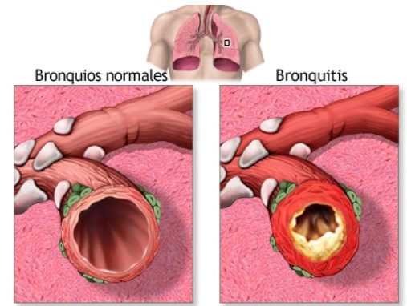

La bronquitis es una infección viral contagiosa que provoca la inflamación de los bronquios. Estas son las vías respiratorias que transportan aire a los pulmones. Cuando estos tubos se infectan, se inflaman. Se forma mucosidad (fluido espeso) dentro de ellos. Esto angosta las vías respiratorias, lo que dificulta la respiración. Existen 2 tipos de bronquitis: aguda y crónica. La bronquitis crónica es de duración prolongada y puede volver a aparecer. Por lo general, ocurre por una irritación constante, por ejemplo, por fumar. La bronquitis aguda dura poco tiempo. La mayoría de los casos, mejora al cabo de varios días, aunque la tos puede durar varias semanas.
Se realizará un examen físico y se analizarán los síntomas. El médico escuchará los pulmones con un estetoscopio. Es posible que su médico se ordene una radiografía de tórax para observar los pulmones.
Para aliviar la bronquitis es recomendable:
La mayoría de los casos de bronquitis aguda desaparecen solos en un período de 7 a 10 días, pero deberá consultar a un médico si los síntomas se prolongan durante más de dos semanas, tiene tos con sangre, se siente débil o tiene fiebre alta.
Para más información, consulte el siguiente vídeo:
Marta Nadal Herraiz y Jazmín Ramírez Agudelo
©Copyright. Todos los derechos reservados. 2022
Puedes volver a la página principal, haciendo click en logo o a través del siguiente enlace:aquí
También le puede interesar: UAlicante